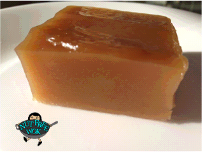

Chinese New Year Cake(Nian Gao)

INGERDIENTS
- 14 ounces (400g)bag of Sticky Rice Floir (Glutinous Rice Flour)
- 2/3 cup (130g)of brown sugar
- 7 ounces (210ml)of boiling water
- 1 tablespoon milk
- Water (by the tablespoon)
- Optional: Red Bean Paste (azuki)
- Optional: Decorations, (E.g.Sesame seeds, Boba tea powder, etc.)
COOKING METHOD
- Mix boiling water and brown sugar until dissolved. Cool.
- Put the flour in a large bowl, and make a well in the centr. Pour in the sugar/water mixture as well as the milk.
Mix.

- Add water, a tablespoon at a time, until the mixture is like dough.
- Roll out onto a (Glutinous Rice Flour) floured surface. Spray one side with Non-stick spray.
- Place on a sprayed paper towel and then in a steamer. Steam to about 45-50 minutes.
- Place a dish on top and invert the cake onto the plate. Remove the paper towel.
- Finished.